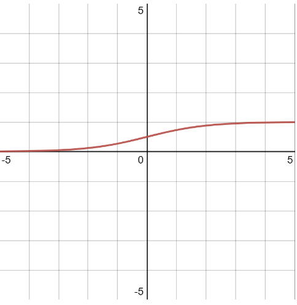
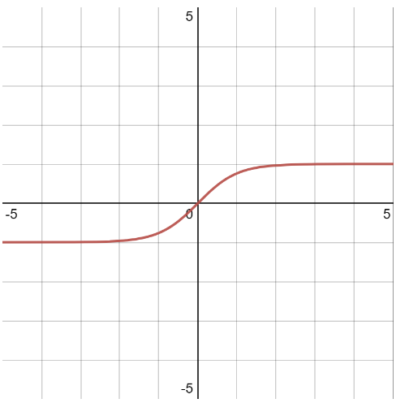
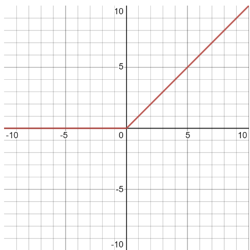

An activation function can be seen as deciding whether a neuron should be activated or not, or how much its input should weight in the network. The role of the activation function is to compute an output from a set of input values for the neuron.
Some commonly used activation functions are sigmoid, hyperbolic
tangent (Tanh) and ReLu for binary classification and softmax for multi-class classification.
Sigmoid
The sigmoid function is a non-linear function that maps the input to a value between 0 and 1. The sigmoid is commonly employed in neural networks because its derivative is simple to calculate and computationally quick, also making it ideal for backpropagation, which is the neural networks training process, read about backpropagation here

Graph of the sigmoid function
Hyperbolic Tangent
The Tanh function is a non-linear function that maps the input to a value between -1 and 1.

Graph of the Tanh function
Rectified Linear Unit
The ReLu function is a piecewise linear function that blocks negative values and maps positive values to themselves. The advantage of the ReLu function is that not all the neurons are activated simultaneously, which makes the network more efficient.

Graph of the ReLu function
Softmax
The softmax function is a multiclass activation function which means that it can be used to classify the output of a problem with more than two outcomes. The softmax function is a combination of sigmoid functions and it compresses the output of the neural network into the range [0, 1].